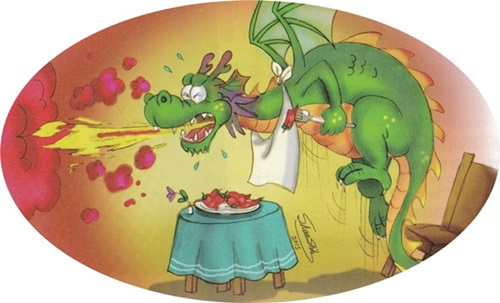

(請在這裡撰寫預測)
Why does your mouth feel like it is on fire when you eat peppers?
(A) Because peppers make small fires on your tongue.
(B) It’s your body’s way of rejecting dangerous foods.
(C) Because your brain thinks your mouth is burning.
(D) Because peppers leave a burn mark on your tongue.
People often describe spicy food as “hot”. That’s because eating spicy food makes your body feel the same way as overheating. When you eat peppers, the receptors on your tongue send a message to your brain. This message makes your brain think, “Your mouth is on fire! Your body is burning!” When this happens, you might sweat and your heart begins to beat faster. Some people don’t enjoy hot food because it’s painful. However, to others, it’s exciting. Although they don’t feel less pain, their bodies are able to handle it better.
Not all peppers are the same. The Scoville scale measures how spicy something is. A bell pepper is about only 0-5 Scovile Heat Unites (SHU) on the scale. Because of its mild taste and bright color, a bell pepper is often served as the side dish. The Carolina Reaper, however, is 1,600,000~2,200,000 SHU. It has been rated as the world's hottest chili pepper by Guinness World Records since August 7, 2013. Very few people in the world dare to give it a try.
Researchers believe your personality is related to how much you like spicy food. People who enjoy action and adventure are six times more likely to enjoy hot food. It is said that they prefer a more challenging and bold life style, such as listening to the music at full volume, gambling, seeing horror movies, and looking down from the edge.
People in warmer areas usually eat more spicy food, and there’s a scientific reason. Germs grow faster on food in warm climates. Spices and peppers can kill germs and prevent them from growing. Therefore, people living in warmer areas are accustomed to cooking the dishes with peppers or other spicy flavors.
What about you? Do you have a pepper phobia or pepper mania? What if you want to add some pretty peppers in your dish but don’t want it too spicy at the same time? Here’s the tip- try to remove the seed pod for it has capsaicin, which hot peppers get their heat from!